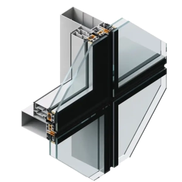

FEAL Systems
FEAL Facade Profiles

Fasada 50 FK
High-quality system for continuous, structural, and self-supporting fully glazed facades. Thermally insulated aluminium profiles deliver excellent energy efficiency.
Visible Width50 mm
U-Value≥ 0.72 W/m²K
SoundUp to 43 dB
Glazing4–56 mm
Mullion90–270 mm
TypeStructural

Fasada 60 K
Modern system for self-supporting facade constructions. Excellent energy efficiency, durability, and aesthetic adaptability for contemporary architecture.
Visible Width60 mm
U-Value≥ 0.70 W/m²K
SoundUp to 42 dB
Glazing4–56 mm
Mullion41–270 mm
TypeSelf-Supporting